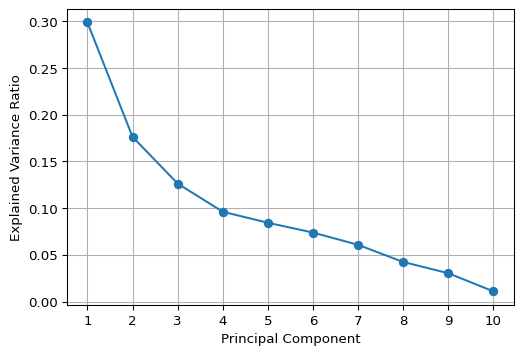
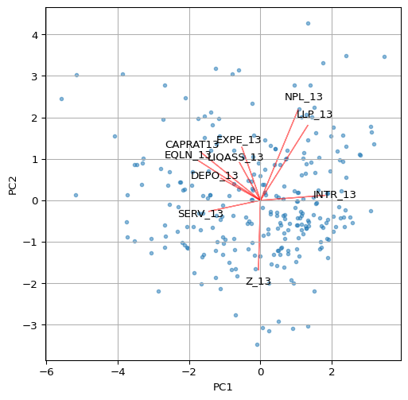
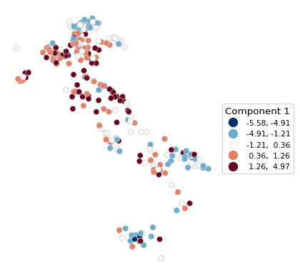
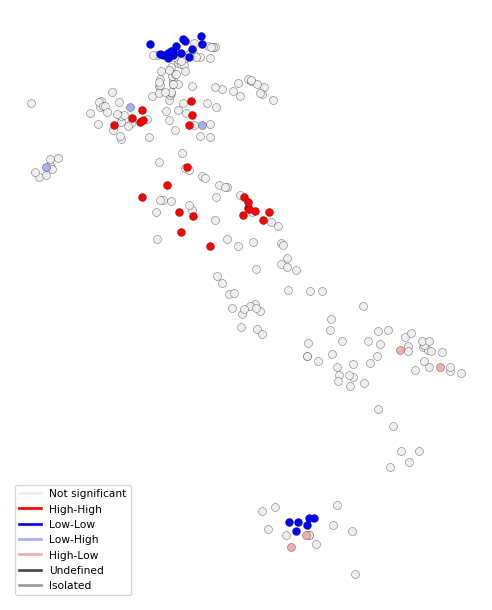

import numpy as np
import pandas as pd
import geopandas as gpd
import matplotlib.pyplot as plt
import matplotlib.lines as pltlines
from sklearn.preprocessing import StandardScaler
from sklearn.decomposition import PCA
from spatial_cluster_helper import ensure_datasets
import pygeoda5 Principal Component Analysis
In this Chapter, we consider Principal Component Analysis (PCA), a core method of both multivariate statistics and machine learning, used for dimension reduction. Dimension reduction is particularly relevant in situations where many variables are available that are highly intercorrelated. In essence, the original variables are replaced by a smaller number of proxies that represent them well in terms of their statistical properties. PCA is discussed in detail in Chapter 2 of the GeoDa Cluster Book.
To illustrate this method, we will again use the italy_banks sample data set.
Principal component analysis is implemented in sklearn.decomposition. The required variable standardization is contained in sklearn.preprocessing. In addition to the usual numpy, pandas, geopandas and matplotlib.pyplot requirements, we will also use matplotlib.lines, as well as spatial-cluster-helper to check on the data. Finally, we implement some local spatial autocorrelation analysis by means of pygeoda.
Required Packages
numpy, pandas, geopandas, matplotlib.pyplot, matplotlib.lines, sklearn.decomposition, sklearn.preprocessing, spatial-cluster-helper, pygeoda
Required Data Sets
italy_banks
5.1 Preliminaries
5.1.1 Import Required Modules
5.1.2 Load Data
We follow the usual practice of setting a path (if needed), and reading the data from the Italian banks shape file (italy_banks.shp) into a GeoDataFrame (dfs). We also carry out a quick check of its contents using head. The data set has 261 point locations and 102 variables in UTM Zone 32 projection.
# Setting data folder:
#path = "/your/path/to/data/"
path = "./datasets/"
# Select the Italy community banks point data:
shpfile = "italy_banks/italy_banks.shp"
# Load the data:
ensure_datasets(shpfile, folder_path = path)
dfs = gpd.read_file(path + shpfile)
print(dfs.shape)
print(dfs.head(3))(261, 102)
idd BankName City latitud \
0 1.0 Banca di Andria di Credito Cooperativo SocietÃ... ANDRIA 41.226694
1 8.0 Banca di Credito Cooperativo di Napoli-BCC di ... NAPLES 40.841020
2 9.0 Banca Adria Credito Cooperativo del Delta s.c.... ADRIA 45.052882
longitud COORD_X XKM COORD_Y YKM ID ... \
0 16.302685 1.112303e+06 1112.303366 4.589794e+06 4589.793823 1.0 ...
1 14.250822 9.427720e+05 942.771983 4.534476e+06 4534.475758 8.0 ...
2 12.056720 7.407057e+05 740.705695 4.993464e+06 4993.464408 9.0 ...
EXPE_16 EXPE_17 SERV_11 SERV_12 SERV_13 SERV_14 SERV_15 \
0 0.027966 0.025114 0.793877 0.775691 0.745046 0.630469 0.611941
1 0.023624 0.018840 0.770019 0.562623 0.540712 0.522125 0.601549
2 0.013770 0.012745 0.790542 0.626628 0.515733 0.358735 0.483700
SERV_16 SERV_17 geometry
0 0.640208 0.666425 POINT (1112303.366 4589793.823)
1 0.502599 0.625220 POINT (942771.983 4534475.758)
2 0.567946 0.608880 POINT (740705.695 4993464.408)
[3 rows x 102 columns]5.1.3 Variables
We follow the example in Chapter 2 of the GeoDa Cluster Book and select ten variables for 2013 from the Italian banks sample data set.
| Column Name | Description |
|---|---|
| CAPRAT13 | Ratio of capital over risk-weighted assets |
| Z_13 | Z-score of return on assets (ROA) + leverage over the standard deviation of ROA |
| LIQASS_13 | Ratio of liquid assets over total assets |
| NPL_13 | Ratio of non-performing loans over total loans |
| LLP_13 | Ratio of loan loss provision over customer loans |
| INTR_13 | Ratio of interest expense over total funds |
| DEPO_13 | Ratio of total deposits over total assets |
| EQLN_13 | Ratio of total equity over customer loans |
| SERV_13 | Ratio of net interest income over total operating revenues |
| EXPE_13 | Ratio of operating expenses over total assets |
The variables are stored in the varlist list for future use. If you want to use a different set of variables, only varlist needs to be updated.
varlist = ['CAPRAT13', 'Z_13', 'LIQASS_13', 'NPL_13', 'LLP_13',
'INTR_13', 'DEPO_13', 'EQLN_13', 'SERV_13', 'EXPE_13']5.1.3.1 Descriptive statistics
We create a subset of our original data set with just the selected variables as data_pca. Correlations among these variables are computed by applying the corr method to this data frame. The results are rounded to two decimals.
data_pca = dfs[varlist]
round(data_pca.corr(), 2)| CAPRAT13 | Z_13 | LIQASS_13 | NPL_13 | LLP_13 | INTR_13 | DEPO_13 | EQLN_13 | SERV_13 | EXPE_13 | |
|---|---|---|---|---|---|---|---|---|---|---|
| CAPRAT13 | 1.00 | -0.03 | 0.21 | -0.08 | -0.10 | -0.39 | 0.18 | 0.87 | 0.32 | 0.14 |
| Z_13 | -0.03 | 1.00 | -0.08 | -0.28 | -0.16 | -0.02 | -0.15 | -0.02 | -0.04 | -0.14 |
| LIQASS_13 | 0.21 | -0.08 | 1.00 | -0.00 | -0.05 | -0.14 | 0.23 | 0.09 | 0.01 | 0.18 |
| NPL_13 | -0.08 | -0.28 | -0.00 | 1.00 | 0.64 | 0.33 | -0.09 | -0.10 | -0.20 | 0.15 |
| LLP_13 | -0.10 | -0.16 | -0.05 | 0.64 | 1.00 | 0.41 | -0.19 | -0.14 | -0.39 | -0.04 |
| INTR_13 | -0.39 | -0.02 | -0.14 | 0.33 | 0.41 | 1.00 | -0.43 | -0.48 | -0.40 | -0.18 |
| DEPO_13 | 0.18 | -0.15 | 0.23 | -0.09 | -0.19 | -0.43 | 1.00 | 0.18 | 0.17 | 0.16 |
| EQLN_13 | 0.87 | -0.02 | 0.09 | -0.10 | -0.14 | -0.48 | 0.18 | 1.00 | 0.39 | 0.12 |
| SERV_13 | 0.32 | -0.04 | 0.01 | -0.20 | -0.39 | -0.40 | 0.17 | 0.39 | 1.00 | 0.07 |
| EXPE_13 | 0.14 | -0.14 | 0.18 | 0.15 | -0.04 | -0.18 | 0.16 | 0.12 | 0.07 | 1.00 |
Note that the correlations are all rather low, which will constitute a challenge for dimension reduction.
5.2 Steps in a Principal Components Analysis
Before illustrating the application of PCA by means of sklearn.decomposition, we first examine in detail the computational steps that are carried out under the hood. These steps consist of:
- standardizing the variables
- constructing the correlation matrix
- computing eigenvalues and eigenvectors of the correlation matrix
- deriving principal component loadings from the eigenvectors
- computing the variance decomposition from the eigenvalues
5.2.1 Standardized Variables
The first step in the PCA analysis is to standardize the data, which is accomplished using the StandardScaler class in sklearn.preprocessing. Recall how everything in scikit-learn is a class to which specific methods are applied, or from which specific attributes are extracted. The method used for standardization to a mean of zero and variance of one is fit_transform applied to a StandardScaler object (additional arguments can be passed to StandardScaler to select different transformations, etc., but here we take the default settings). We use the data_pca data frame as input.
Descriptive statistics of the resulting data frame, computed by means of describe, reveal that indeed the mean is zero and the standard deviation is one. Note that StandardScaler uses a consistent estimate of the variance, i.e., the sum of squared deviations from the mean is divided by the number of observations. In contrast, in GeoDa, an unbiased estimate is used in which the same sum is divided by the number of observations less one (for the estimated mean). This does not affect the principal component analysis, but it will be relevant in the later cluster analyses carried out with sklearn.
# Standardize the data
X = StandardScaler().fit_transform(data_pca)
pd.DataFrame(X).describe().round(2)| 0 | 1 | 2 | 3 | 4 | 5 | 6 | 7 | 8 | 9 | |
|---|---|---|---|---|---|---|---|---|---|---|
| count | 261.00 | 261.00 | 261.00 | 261.00 | 261.00 | 261.00 | 261.00 | 261.00 | 261.00 | 261.00 |
| mean | -0.00 | -0.00 | -0.00 | 0.00 | -0.00 | -0.00 | 0.00 | -0.00 | -0.00 | -0.00 |
| std | 1.00 | 1.00 | 1.00 | 1.00 | 1.00 | 1.00 | 1.00 | 1.00 | 1.00 | 1.00 |
| min | -1.42 | -0.76 | -1.27 | -1.94 | -1.68 | -2.28 | -2.34 | -1.33 | -3.07 | -2.34 |
| 25% | -0.64 | -0.54 | -0.75 | -0.76 | -0.69 | -0.70 | -0.74 | -0.67 | -0.66 | -0.73 |
| 50% | -0.29 | -0.29 | -0.24 | -0.11 | -0.16 | -0.04 | -0.06 | -0.28 | -0.01 | -0.10 |
| 75% | 0.48 | 0.08 | 0.41 | 0.64 | 0.45 | 0.68 | 0.80 | 0.44 | 0.68 | 0.55 |
| max | 5.49 | 5.97 | 3.66 | 2.76 | 3.90 | 2.07 | 2.40 | 4.92 | 2.51 | 3.41 |
5.2.2 Correlation Matrix
The next step is to compute the associated correlation matrix, as the cross product of the transpose of the matrix of standardized data, X.T with X, divided by the number of observations. Note that this gives the same result as computed above using data_pca.corr(). In our calculation, n corresponds with the number of observations (rows of X). Note how these values are the same as in Table 5.2.
n = X.shape[0]
C = np.dot(X.T, X)/n
C.round(2)array([[ 1. , -0.03, 0.21, -0.08, -0.1 , -0.39, 0.18, 0.87, 0.32,
0.14],
[-0.03, 1. , -0.08, -0.28, -0.16, -0.02, -0.15, -0.02, -0.04,
-0.14],
[ 0.21, -0.08, 1. , -0. , -0.05, -0.14, 0.23, 0.09, 0.01,
0.18],
[-0.08, -0.28, -0. , 1. , 0.64, 0.33, -0.09, -0.1 , -0.2 ,
0.15],
[-0.1 , -0.16, -0.05, 0.64, 1. , 0.41, -0.19, -0.14, -0.39,
-0.04],
[-0.39, -0.02, -0.14, 0.33, 0.41, 1. , -0.43, -0.48, -0.4 ,
-0.18],
[ 0.18, -0.15, 0.23, -0.09, -0.19, -0.43, 1. , 0.18, 0.17,
0.16],
[ 0.87, -0.02, 0.09, -0.1 , -0.14, -0.48, 0.18, 1. , 0.39,
0.12],
[ 0.32, -0.04, 0.01, -0.2 , -0.39, -0.4 , 0.17, 0.39, 1. ,
0.07],
[ 0.14, -0.14, 0.18, 0.15, -0.04, -0.18, 0.16, 0.12, 0.07,
1. ]])5.2.3 Eigenvalues and Eigenvectors
The coefficient loadings that are used to transform the original variables into principal components are obtained as the eigenvectors of the correlation matrix. We use the eig function from numpy.linalg to compute both eigenvalues and eigenvectors. Note how the linalg.eig function returns a tuple, with two arrays. The first is a vector with the eigenvalues, the second is a \(p \times p\) matrix with the eigenvectors as columns, where \(p\) is the number of variables. More precisely, the first column of this matrix is the eigenvector for the first eigenvalue, etc.
Keep in mind that the eigenvalues will not necessarily be sorted. So we will also need to sort them from the greatest value to the smallest. This is accomplished by means of numpy.argsort (the order needs to be reversed, hence the use of [::-1])
In our code, we first compute the arrays for the tuple of eigenvalues and eigenvectors as E_values and E_vectors. We obtain the sorted_indices from the eigenvalues in E_values so that we can re-order the arrays for both eigenvalues and eigenvectors.
# Compute the eigenvalues and eigenvectors to use as loadings
E_values, E_vectors = np.linalg.eig(C)
# Sort eigenvalues and eigenvectors in descending order
sorted_indices = np.argsort(E_values)[::-1]
E_values = E_values[sorted_indices]
E_vectors = E_vectors[:, sorted_indices]
print('Eigenvalues:\n',E_values.round(3))
print('Eigenvectors:\n',E_vectors.round(3))Eigenvalues:
[2.987 1.763 1.263 0.961 0.843 0.738 0.607 0.424 0.304 0.11 ]
Eigenvectors:
[[ 0.417 -0.289 0.4 0.201 0.054 0.035 0.178 -0.218 0.021 0.677]
[ 0.014 0.42 0.236 0.565 -0.292 -0.392 -0.452 -0.068 0.04 0.003]
[ 0.148 -0.229 -0.39 0.639 0.203 0.507 -0.205 0.129 -0. -0.094]
[-0.264 -0.546 0.081 -0.106 -0.07 -0.121 -0.409 0.063 0.65 0.032]
[-0.333 -0.453 0.222 0.094 0.124 -0.234 -0.17 0.234 -0.687 -0.004]
[-0.454 -0.03 0.14 0.082 -0.015 0.31 -0.013 -0.807 -0.083 -0.109]
[ 0.277 -0.133 -0.483 -0.064 0.382 -0.542 -0.164 -0.443 -0.068 -0.024]
[ 0.438 -0.241 0.44 0.068 0.027 -0.049 0.144 -0.085 0.06 -0.719]
[ 0.363 0.066 0.091 -0.443 -0.114 0.35 -0.676 -0.068 -0.247 0.037]
[ 0.131 -0.321 -0.348 0.026 -0.831 -0.065 0.151 -0.112 -0.164 -0.02 ]]5.2.4 Component Loadings
We combine the eigenvectors into a DataFrame pdvec, using the variable names (columns of data_pca) as the index (in pandas, these will become the row names). The eigenvectors are the component loadings of each of the original variables. Note that there are ten components in total, the same number as there are original variables. Dimension reduction will result by replacing the ten variables by a smaller number of principal components, such that a target explained variance is obtained. The smaller the resulting number of needed components, the greater the dimension reduction.
The loadings show us the weight of each original variable in the newly created components. This allows us to interpret and, potentially, label these new components, although that typically takes considerable creativity.
# Combine eigenvectors into a data frame
L = E_vectors
pdvec = pd.DataFrame(L, index = data_pca.columns)
print('Component Loadings:')
print(pdvec)Component Loadings:
0 1 2 3 4 5 \
CAPRAT13 0.416651 -0.289011 0.400281 0.200754 0.054467 0.034624
Z_13 0.013973 0.420044 0.235984 0.564699 -0.291502 -0.392045
LIQASS_13 0.147681 -0.229038 -0.390257 0.638757 0.202743 0.506880
NPL_13 -0.264109 -0.546288 0.081384 -0.105872 -0.069770 -0.120596
LLP_13 -0.332622 -0.452568 0.221917 0.094127 0.124286 -0.234403
INTR_13 -0.454442 -0.030416 0.139912 0.081664 -0.015137 0.309591
DEPO_13 0.277034 -0.133345 -0.483049 -0.064276 0.381635 -0.541985
EQLN_13 0.438027 -0.240695 0.440113 0.068469 0.026698 -0.048546
SERV_13 0.362998 0.066494 0.090886 -0.443382 -0.113546 0.349947
EXPE_13 0.130787 -0.321352 -0.347914 0.025643 -0.831361 -0.065367
6 7 8 9
CAPRAT13 0.177808 -0.218361 0.020765 0.677092
Z_13 -0.451626 -0.067665 0.039630 0.002815
LIQASS_13 -0.204524 0.129197 -0.000251 -0.094164
NPL_13 -0.408614 0.063170 0.650065 0.032139
LLP_13 -0.169731 0.234213 -0.687286 -0.004423
INTR_13 -0.013168 -0.807004 -0.083059 -0.109131
DEPO_13 -0.163713 -0.443464 -0.067723 -0.023698
EQLN_13 0.143620 -0.084699 0.059671 -0.719291
SERV_13 -0.675579 -0.068169 -0.247354 0.036992
EXPE_13 0.151014 -0.111648 -0.163775 -0.019992 5.2.5 Variance Decomposition
An important property of the principal components is how much of the original variance each explains. Since the ten variables are standardized, the total variance equals 10. We verify that this is also the sum of the eigenvalues of \(X'X\). Then we compute the share of the total variance associated with each principal component as the ratio of its eigenvalue to the total variance.
# Variance decomposition
totvar = np.sum(E_values)
print('Total variance:',totvar)
# Variance share
varshare = E_values / totvar
print('Share of total variance in each component:\n', varshare)Total variance: 10.000000000000007
Share of total variance in each component:
[0.2986745 0.17631768 0.12628661 0.09612748 0.08433105 0.07383474
0.06074807 0.04237308 0.03035229 0.01095451]In addition to the individual variance share, the cumulative variance share is an important property. This provides a measure of how much the components contribute up to a given number of components. This can then be used as a criterion to select the number of components. We compute this by applying numpy.cumsum to the array of variance shares, varshare.
cumvarshare = np.cumsum(varshare)
print('Cumulative variance share:\n', cumvarshare)Cumulative variance share:
[0.2986745 0.47499218 0.60127878 0.69740626 0.78173731 0.85557205
0.91632012 0.9586932 0.98904549 1. ]A common criterion to select the number of components is the 95% threshold. In our example, this is reached after seven components, not exactly much in terms of dimension reduction. An alternative criterion is the so-called Kaiser criterion, which selects components with an eigenvalue larger than one. The rationale for this is that the variance associated with these components is larger than that for the original variables (standardized to variance one). In our example, the Kaiser criterion would yield three components, a much more reasonable result.
5.3 Principal Components Analysis With Scikit-Learn
In scikit-learn, principal component analysis is implemented through the PCA class of sklearn.decomposition. This operates in the same fashion as the earlier examples of sklearn that we considered: first an instance of the PCA class is created, to which then a fit method is applied. As we have seen, these operations can be chained.
In contrast to the procedure outlined in Section 5.2, the sklearn implementation uses a singular value decomposition (SVD) to obtain the relevant eigenvalues and eigenvectors. SVD is applied directly to the \(n\) by \(p\) matrix \(X\) instead of to the cross product. A detailed discussion is given in Chapter 2 of the GeoDa Cluster Book. SVD is also the default method used in GeoDa.
The PCA results are obtained in a single line command by applying fit to a PCA object, with as argument the standardized matrix X. The result is assigned here to pca_res, an instance of the PCA class that now contains several useful attributes.
pca_res = PCA().fit(X)
print(type(pca_res))<class 'sklearn.decomposition._pca.PCA'>5.3.1 PCA Result Properties
After an application of the fit method, our pca_res result object has several important attributes:
components_: the factor loadings as an array of rows (not columns as in the example above), one for each component. So, the first row contains the loadings for the first PC, etc.explained_variance_: the explained variance by each component. As shown above, this corresponds to the matching eigenvalue of \(X'X\).explained_variance_ratio_: the share of the total variance explained by each component,
as well as several other, more technical attributes.
We again collect the component loadings into a data frame, but now organize it differently, with the original variables as columns and the labeled components (from 1 to 10) as rows (we name the rows as sequence numbers using range passed to index). The resulting table is exactly the transpose of the table in Section 5.2.4.
# Component loadings, row by row
pdload = pd.DataFrame(pca_res.components_,
index = range(1, pca_res.components_.shape[0] + 1),
columns = data_pca.columns)
print(pdload) CAPRAT13 Z_13 LIQASS_13 NPL_13 LLP_13 INTR_13 DEPO_13 \
1 -0.416651 -0.013973 -0.147681 0.264109 0.332622 0.454442 -0.277034
2 0.289011 -0.420044 0.229038 0.546288 0.452568 0.030416 0.133345
3 -0.400281 -0.235984 0.390257 -0.081384 -0.221917 -0.139912 0.483049
4 0.200754 0.564699 0.638757 -0.105872 0.094127 0.081664 -0.064276
5 -0.054467 0.291502 -0.202743 0.069770 -0.124286 0.015137 -0.381635
6 -0.034624 0.392045 -0.506880 0.120596 0.234403 -0.309591 0.541985
7 -0.177808 0.451626 0.204524 0.408614 0.169731 0.013168 0.163713
8 0.218361 0.067665 -0.129197 -0.063170 -0.234213 0.807004 0.443464
9 -0.020765 -0.039630 0.000251 -0.650065 0.687286 0.083059 0.067723
10 -0.677092 -0.002815 0.094164 -0.032139 0.004423 0.109131 0.023698
EQLN_13 SERV_13 EXPE_13
1 -0.438027 -0.362998 -0.130787
2 0.240695 -0.066494 0.321352
3 -0.440113 -0.090886 0.347914
4 0.068469 -0.443382 0.025643
5 -0.026698 0.113546 0.831361
6 0.048546 -0.349947 0.065367
7 -0.143620 0.675579 -0.151014
8 0.084699 0.068169 0.111648
9 -0.059671 0.247354 0.163775
10 0.719291 -0.036992 0.019992 The explained variance of each component (i.e., the sorted eigenvalues of \(X'X\)) are contained in explained_variance_. These are the same results as in Section 5.2.5. The explained variance share does not have to be computed explicitly, since it is contained in the array explained_variance_ratio_. However, the cumulative explained variance share still needs to be calculated by means of numpy.cumsum. The results are again identical to those above.
# Explained variance of each component
pca_res.explained_variance_array([2.99823249, 1.76995822, 1.26772324, 0.96497201, 0.84655397,
0.74118715, 0.60981717, 0.42536058, 0.30469032, 0.10996639])# Explained variance share
print("Explained variance share:", pca_res.explained_variance_ratio_)
print("\nCumulative variance share:", np.cumsum(pca_res.explained_variance_ratio_))Explained variance share: [0.2986745 0.17631768 0.12628661 0.09612748 0.08433105 0.07383474
0.06074807 0.04237308 0.03035229 0.01095451]
Cumulative variance share: [0.2986745 0.47499218 0.60127878 0.69740626 0.78173731 0.85557205
0.91632012 0.9586932 0.98904549 1. ]5.3.2 Principal Components
The actual components are found by applying transform(X) to the PCA result object. This yields a \(n\) by \(p\) numpy array with the observations as rows and the component scores as columns. To illustrate this, we show the first five rows of the array.
# The actual principal components
pcomps = pca_res.transform(X)
pcomps[0:5,:]array([[-2.26679046, 0.43413755, 3.41152327, 0.96571188, 1.04437104,
-1.16371188, 0.08190058, 0.14667044, 0.63028628, 0.04197353],
[-1.17912038, 1.97789286, 1.42306193, 2.61503026, -0.2044251 ,
-1.16313925, -1.11227835, 0.43890689, -0.034723 , -0.43096847],
[ 1.51954157, 0.67741483, 1.03804823, 0.89012655, -0.9791715 ,
0.13891672, -0.31238392, 1.06950892, -0.7985399 , 0.03163169],
[ 2.31900576, 0.92853046, 0.19192593, 0.3382497 , -0.32122236,
0.20426167, -0.30377276, -0.84063078, 0.1894053 , 0.15740099],
[ 2.36956218, -0.24021829, -0.47730339, 0.33135428, -0.28279248,
-0.46963886, -0.42419014, 0.29410648, -0.37962959, 0.13039031]])5.4 Scree Plot
The choice of how many components to keep is not an easy one. There are several shortcut criteria, but they often yield different recommendations. For example, one would suggest to keep all the components until the explained variance is 95% of the original. In our example, that would mean keeping seven or eight components (out of ten, depending on how the criterion is imposed), which is not exactly dimension reduction.
The Kaiser criterion suggests keeping the principal components with eigenvalues larger than one. This would yield three components, a more reasonable reduction.
A graphical method to assess the number of components is the so-called scree plot, a plot of explained variance against the number of components. The goal is to identify a kink in this plot, which then suggests the proper number of components. In practice, this is not as easy as it sounds, as the example below illustrates.
We implement a scree plot by means of a simple matplotlib line plot with the explained variance ratio (explained_variance_ratio_) on the vertical axis and a simple counter on the horizontal axis. As the graph shows, it is not easy at all to identify the kink.
#Screeplot of variance
plt.figure(figsize = (6, 4))
plt.plot(range(1, len(pca_res.explained_variance_ratio_) + 1),
pca_res.explained_variance_ratio_, marker= 'o' ,
linestyle = '-')
plt.xlabel('Principal Component')
plt.ylabel('Explained Variance Ratio')
plt.xticks(np.arange(1, len(pca_res.explained_variance_ratio_) + 1))
plt.grid(True)
plt.show()

5.5 Visualizing Principal Components
5.5.1 Biplot
A classic visualization of the relative contribution of the original variables to the principal components is a so-called biplot. For any pair of components, it consists of a scatter plot of the component values, with superimposed line plots that show the relative contribution of each variable to each of the components.
For example, a line plot that points to the upper-right quadrant in the scatter plot (e.g., LLP_13) would indicate that the variable in question contributes positively to both components (note that the results may yield different signs for the loadings, depending on the method used). On the other hand, a line plot that points to the upper-left quadrant (e.g., CAPRAT13) would suggest a negative contribution to the first component, but a positive contribution to the second (on the y-axis).
We illustrate the biplot by means of a simple function using a number of basic matplotlib plotting operations. The first two principal components are contained in the first two columns of the pcomps array constructed in Section 5.3.2.
In the biplot below, we have re-scaled the loadings by multiplying them by 4 just so they get more visible in the graph.
# Biplot
def biplot(score, coeff, labels = None):
plt.figure(figsize = (6, 6))
plt.scatter(score[:, 0], score[:, 1], alpha = 0.5, s=10)
for i in range(len(coeff)):
plt.arrow(0, 0, coeff[i, 0], coeff[i, 1], color = 'r', alpha = 0.5)
if labels is None:
plt.text(coeff[i, 0]*1.15, coeff[i, 1]*1.15, "Var" + str(i+1),
color = 'black', ha = 'center', va = 'center')
else:
plt.text(coeff[i, 0]*1.15, coeff[i, 1]*1.15, labels[i],
color = 'black', ha = 'center', va = 'center')
plt.xlabel("PC1")
plt.ylabel("PC2")
plt.grid()
plt.show()
biplot(pcomps[:, :2], pca_res.components_.T*4,
labels = data_pca.columns)

Other visualizations, such as the ones illustrated in the GeoDa Cluster Book can be pursued as well, including a parallel coordinate plot showing the contributions of different variables to a component. This is not further pursued here.
5.6 Spatializing the PCA
As described in the GeoDa Cluster Book, there are several ways in which the spatial characteristics of the results of a principal components calculation can be visualized. The basic idea is that a component (typically the first or second principal component) summarizes several underlying variables and therefore can be used as a proxy for multivariate relationships. In essence then, a univariate spatial visualization of a principal component provides insight into multivariate spatial patterns.
All the usual visualizations can be applied, such as various thematic maps and cluster maps based on indicators of local spatial autocorrelation. Care must be taken in interpreting these results, since the sign of the loadings is indeterminate (so high can become low and vice versa). In addition, one can assess the similarity in results of a full multivariate approach, such as a multivariate local Geary or a neighbor match map and the univariate results for the principal component. This is not further pursued here (for extensive examples, see Chapter 2 of the GeoDa Cluster Book).
We close the overview with an illustration of a Box Map and a Local Moran cluster map for the first principal component.
The strongest loadings (absolute values > 0.3) in PC1 are:
Negative:
CAPRAT13 (-0.42) → Capital adequacy
EQLN_13 (-0.44) → Equity over loans
SERV_13 (-0.36) → Net interest income over revenues
Positive:
LLP_13 (0.33) → Loan loss provisions
INTR_13 (0.45) → Interest expensesTherefore, PC1 contrasts capital adequacy and profitability (negative loadings on CAPRAT13, EQLN_13, and SERV_13) with credit risk and funding costs (positive loadings on LLP_13 and INTR_13). Low PC1 values represent banks with higher capital adequacy, more equity, and stronger deposit bases. High PC1 values represent banks with higher credit risk, loan loss provisions, and funding costs, indicating capital inadequacy and financial strain. As a result, an appropriate label for PC1 could be “Credit Risk & Funding Costs vs. Capital Adequacy”. Remember that the signs of the loadings may be inverted. The interpretation — and therefore the labelling of the coefficients — must be adjusted accordingly, depending on the signs of the loadings.
5.6.1 Box Map
The first component is the first column of the array pcomps. It is added to our GeoDataFrame dfs so that the plot function can be applied. We use the by now familiar options from Chapter 2.
# Box map of Component 1:
dfs['Comp.1'] = pcomps[:, 0]
ax = dfs.plot(
column = 'Comp.1',
scheme = 'BoxPlot',
cmap = 'RdBu_r',
linewidth = 0.5,
edgecolor = '0.8',
legend = True,
legend_kwds = {"loc": "center left", "bbox_to_anchor": (1,0.5),
"title": "Component 1", "fontsize":8}
)
ax.set_axis_off()

5.6.2 Local Moran Cluster Map
We use pygeoda to compute the Local Moran statistic. This requires three steps:
openthe GeoDataFrame and turn it into apygeodadata object- create
queen_weightsfrom the geoda data object - compute a
local_moranobject by passing the weights and the variable- optional arguments are
permutationsfor the number of permutations (default is 999),seedfor the random seed (default is 1234567), andsignificance_cutofffor the p-value that determines significance (default is 0.05)
- optional arguments are
In our illustration, we use the first principal component with 9999 permutations and a p-value cut-off of 0.01.
The resulting lisa object contains the statistics, lisa_values, associated p-values, lisa_pvalues, the neighbor cardinality, lisa_num_nbrs, the cluster classification, based on the specified p-value, lisa_clusters, labels, lisa_labels, and associated colors, lisa_colors.
dfs_g = pygeoda.open(dfs)
queen_w = pygeoda.queen_weights(dfs_g)
lm = pygeoda.local_moran(queen_w, dfs_g['Comp.1'],
permutations = 9999, seed = 1234567,
significance_cutoff = 0.01)
lmlisa object:
lisa_values(): [0.005296951235279905, -0.3184600483378756, 0.36298009350110183, 1.109043986529309, 1.1710899759593107, 1.056924984131107, -1.3445446406378438, 0.055015911773549774, -0.1488976211105254, 0.2916115206147433, ...]
lisa_pvalues(): [0.4801, 0.1814, 0.0859, 0.019, 0.0077, 0.0422, 0.0716, 0.0966, 0.021, 0.2121, ...]
lisa_num_nbrs(): [6, 4, 10, 5, 6, 6, 5, 8, 5, 5, ...]
lisa_clusters(): [0, 0, 0, 0, 1, 0, 0, 0, 0, 0, ...]
lisa_labels(): ('Not significant', 'High-High', 'Low-Low', 'Low-High', 'High-Low', 'Undefined', 'Isolated')
lisa_colors(): ('#eeeeee', '#FF0000', '#0000FF', '#a7adf9', '#f4ada8', '#464646', '#999999')Note that this listing is actually a bit misleading, since all methods except lisa_pvalues() return tuples, not lists. In practice, this doesn’t matter much, since they are typically converted to numpy arrays or pandas series anyway.
In addition, there are two functions to obtain the Bonferroni bound p cut-off and the False Discovery Rate (FDR) p-value, respectively as lm.lisa_bo(pvalue) and lm.lisa_fdr(pvalue), where p-value is typically 0.05. Note that smaller values may not yield a feasible cut-off given the maximum number of permutations. However, in contrast to what is the case for desktop GeoDa, the pygeoda implementation allows any value for the number of permutations.
We illustrate this for a target p-value of 0.05.
print("Bonferroni bound:", np.round(lm.lisa_bo(0.05), 6))
print("FDR:", np.round(lm.lisa_fdr(0.05), 6))Bonferroni bound: 0.000192
FDR: 0.009962With the usual commands, we create a custom local cluster map using the lisa_colors and lisa_labels.
fig, ax = plt.subplots(figsize = (8,8))
lisa_colors = lm.lisa_colors()
lisa_labels = lm.lisa_labels()
dfs['LISA'] = lm.lisa_clusters()
for ctype, data in dfs.groupby('LISA'):
color = lisa_colors[ctype]
lbl = lisa_labels[ctype]
data.plot(color = color,
ax = ax,
label = lbl,
edgecolor = 'black',
linewidth = 0.2)
# Place legend in the lower left hand corner of the plot
lisa_legend = [pltlines.Line2D([0], [0],
color = color, lw = 2) for color in lisa_colors]
ax.legend(lisa_legend, lisa_labels, loc = 'lower left',
fontsize = 8, frameon = True)
ax.set_axis_off()

5.7 Practice
Use a different set of variables from the italy_banks data set (or any other sample data set) to compute a set of principal components. Assess the extent to which true dimension reduction is achieved. Experiment with different spatial and non-spatial visualization techniques.